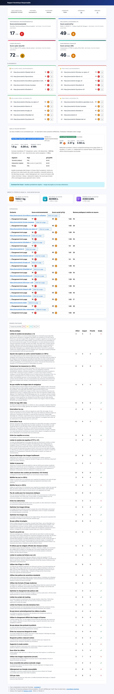
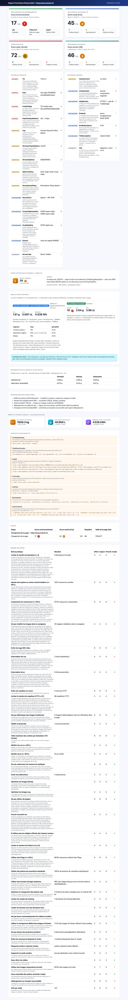

nr-analysis-cli
Un CLI Node.js qui audite l'empreinte environnementale, l'accessibilité et la sécurité d'un site web, page par page, sans ouvrir un navigateur à la main.
Auditer l'écoconception d'un site à la main, extension par extension, page par page, ne tient pas la route au-delà de trois URL. Ce CLI reprend le moteur de règles de l'extension Chrome GreenIT-Analysis et l'exécute en tâche de fond, sur autant de pages qu'on veut, dans un vrai Chromium piloté par Puppeteer plutôt que dans une simulation.
On lui donne une URL ou une liste d'URL. Il ouvre chaque page avec le cache désactivé pour ne pas fausser les mesures, applique 38 règles d'écoconception (RGESN, GR491), 17 contrôles d'accessibilité, 13 contrôles de sécurité serveur et 9 contrôles de performance. Il calcule aussi une estimation du CO₂, de l'eau et de l'énergie consommés par visite, avec le modèle Sustainable Web Design v4 et un calibrage NegaOctet/ARCEP/ADEME pour les sites hébergés ou visités en France. Le résultat sort en rapport HTML ou Excel.
C'est pour les équipes qui doivent documenter un plan d'écoconception, les agences qui auditent des sites clients, ou pour qui veut simplement comparer un site avant et après une refonte.
Essayer en cinq minutes
git clone https://github.com/Institut-du-Numerique-Responsable/nr-analysis-cli.git
cd nr-analysis-cli
npm install
npm link
nr analyse --url https://institutnr.org/Le rapport HTML s'ouvre directement dans le navigateur. Pour une liste de pages, un fichier texte avec une URL par ligne suffit : nr analyse urls.txt.
Ce que ça sort



Quatre axes, un score chacun
| Axe | Ce qui est vérifié |
|---|---|
| Environnement | 38 règles d'écoconception : poids, requêtes, images, polices, tracking… |
| Accessibilité | 12 contrôles Tanaguru/RGAA + 5 contrôles complémentaires |
| Sécurité | 13 contrôles serveur : TLS, en-têtes HTTP, cookies, DNSSEC |
| Performance serveur | 9 contrôles d'infrastructure : HTTP/2, compression, cache, CDN |
Le détail complet des 77 règles est dans le référentiel du README.
Licence
AGPL-3.0-or-later. L'outil hérite de composants dérivés de GreenIT-Analysis et d'EcoMeter, sous la même licence. En clair : l'usage commercial est permis, mais si vous déployez une version modifiée comme service accessible à des tiers, vous devez en publier le code source. Les détails sont dans le README.